|
|
Members
|
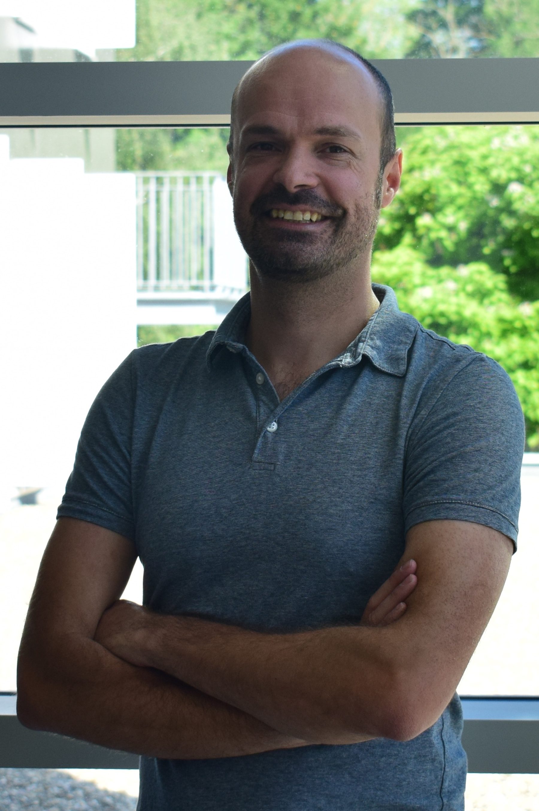
|
|
Johannes Schachenmayer (group leader):
-
Habilitation (2019): HDR, Université de Strasbourg.
-
CNRS (2016): Tenured position in Strasbourg.
-
Post-doc (2013-2016): JILA, Boulder, CO, US (group of A. M. Rey).
-
Visiting scholar (2011-2013): University of Pittsburgh (group of A. J. Daley).
-
Doctoral degree (2008-2012): Dr. rer. nat, Universität Innsbruck, Austria.
-
Master degree (2008): Dipl.-Phys., Technische Universität München (TUM)
|
|
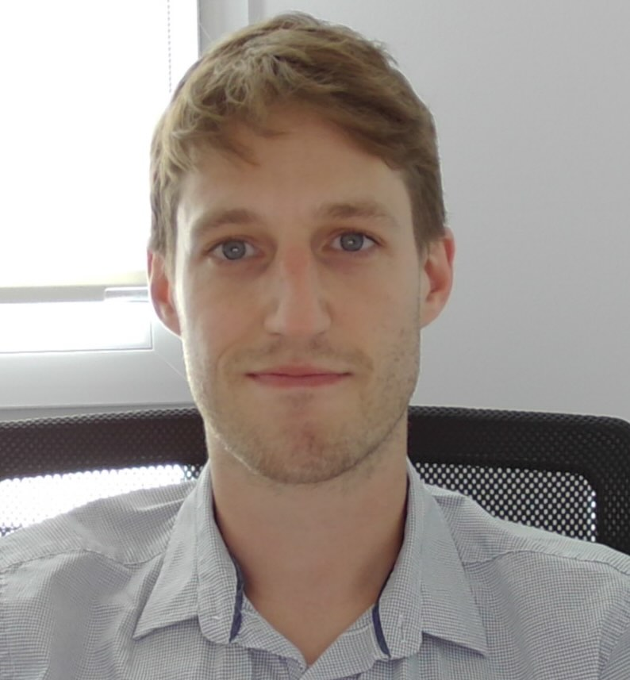
|
|
Thomas Botzung (Post-doc): After obtaining his PhD degree in 2019
(University of Strasbourg and University of Bologna), from 2020 until 2022 Thomas
worked as a post-doc in the theoretical
quantum technology group at RWTH Aachen, Germany. He continued his research in the
Laboratoire de Physique de Modélisation des Milieux Condensés in Grenoble, France, performing
numerical studies in SU(N) spin lattice systems. Since May 2024, he joint us back in
Strasbourg to work on the project DINPOPARC (“Disorder-Induced Non-Classical States in
Polaritonic Chemistry”).
|
|
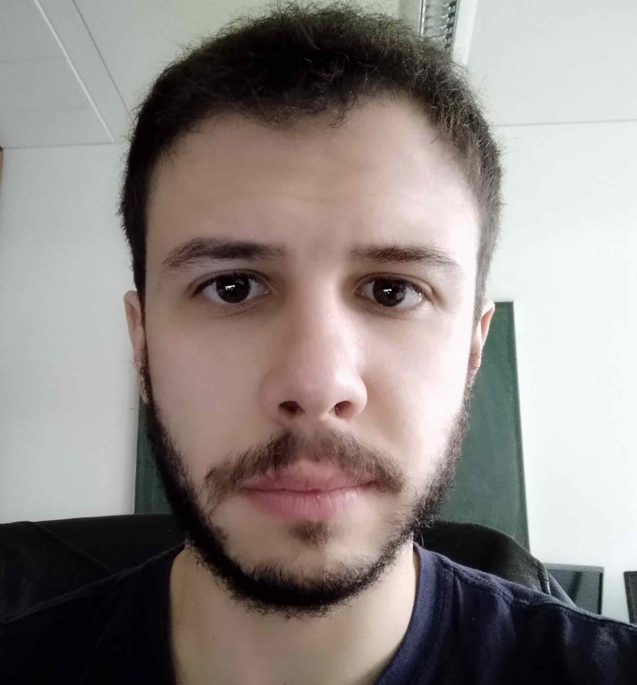
|
|
Raphaël Menu (Post-doc): Raphaël Menu (Post-doc): Following his
PhD in 2020 (at the Ecole Normale Supérieure de Lyon under the supervision of T. Roscilde),
Raphaël joined the team of G. Morigi at Saarland University (Saarbrücken, Germany) where he
worked on topological defects in chains of trapped ions, and the influence of noise in
adiabatic quantum computing. Since February 2025, he works in Strasbourg on tensor-network
based methods to optimally unravel open quantum systems.
|
|
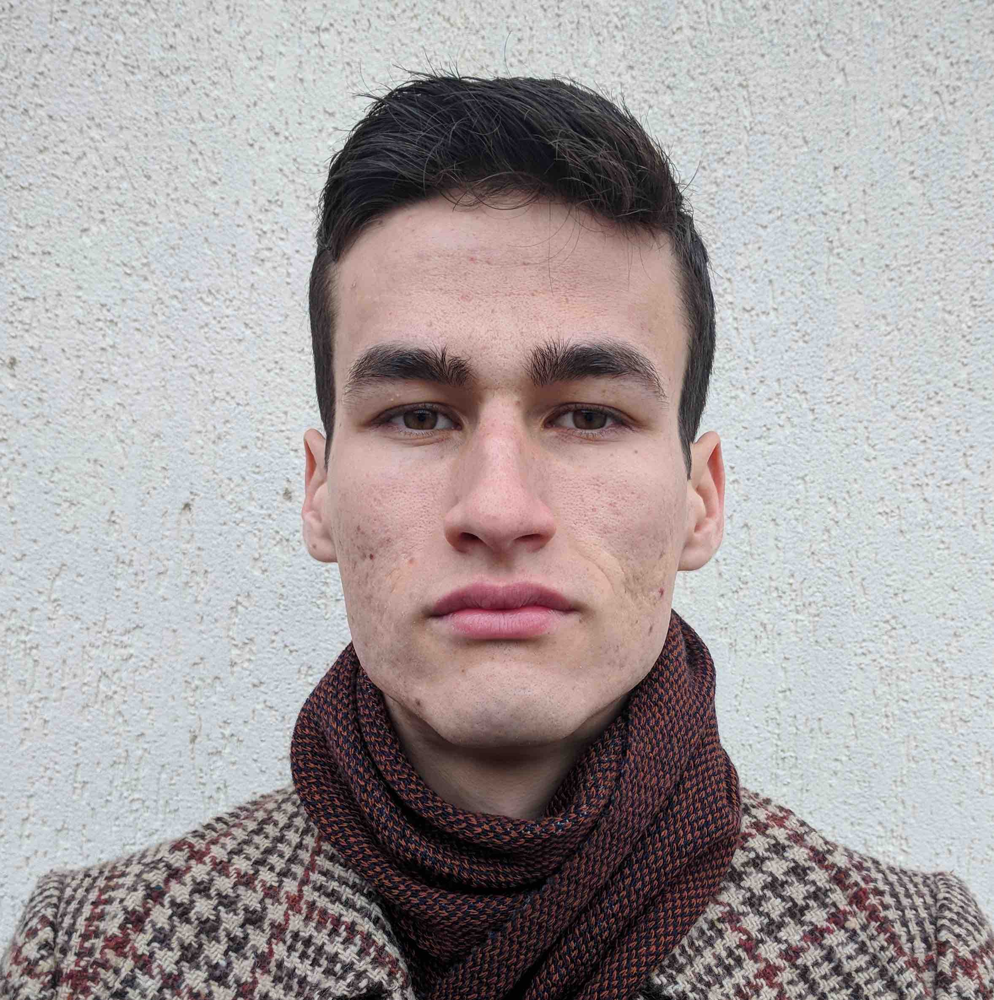
|
|
Ruben Daraban (PhD student): After obtaining his Master's degree in physics at the
University of Strasbourg in 2023, Ruben continued his studies with a PhD project afterwards.
His research focuses on studying entanglement buildup in
quantum circuits using classical simulations based on tensor network methods.
|
|
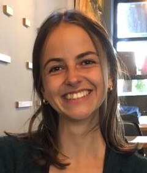
|
|
Réka Schwengelbeck (PhD student): After obtaining her master's degree in physics from
Freie Universität Berlin (master thesis at chair of Prof. Schollwöck at LMU Munich),
Réka continues her academic journey by pursuing a PhD at the University of Strasbourg,
where she is working on molecular dynamics under collective strong coupling.
|
|
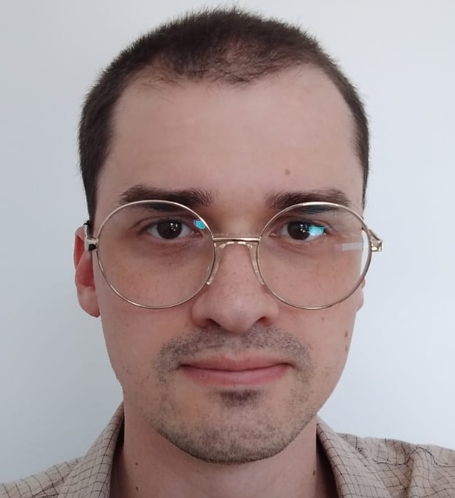
|
|
Luiz Otavio Ribeiro Solak (Visiting PhD):
Obtained his Master’s Degree in Sciences at the State University of Ponta Grossa (UEPG) in 2021
(supervisor: Lucas Stori de Lara).
Then he proceeded to work on his PhD with Celso Jorge Villas-Bôas at Federal university of
São Carlos (UFSCar) focusing on Quantum Information processing in Atom-Cavity systems.
He is visiting from Sep. 2024 to July 2025.
|
|
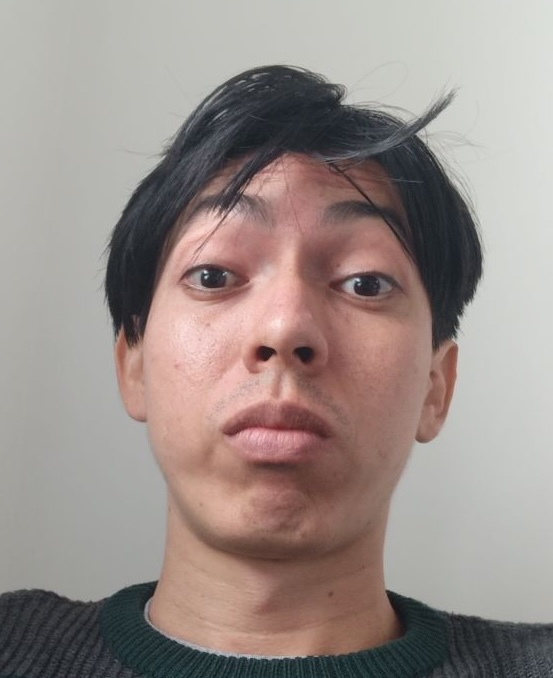
|
|
Pedro Pablo Rosario Vargas (Visiting PhD):
After obtaining his bachelor degree in 2021 (Colombia),
Pedro moved to São Carlos - Brazil,
where he continued his PhD studies on
multipartite entanglement witnesses using
collective operators, under the supervision of Prof. Romain Bachelard.
He is visiting from Sep. 2024 to August 2025.
|
Former members
|
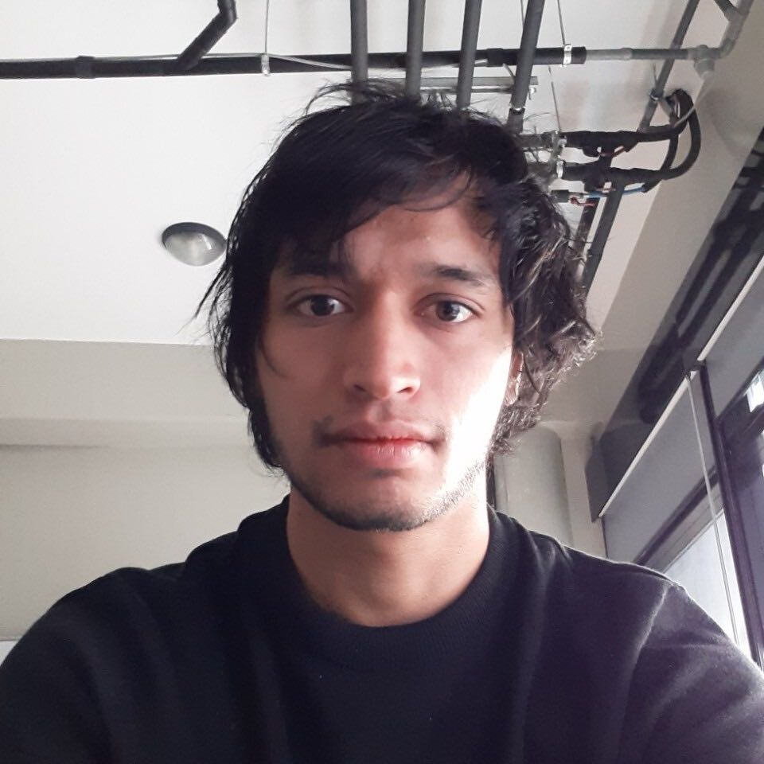
|
|
Guillermo Preisser (PhD student): Guillermo studied physics a the National Autonomous University
of Mexico in Mexico City and graduated in 2019. For his PhD studies he moved to Strasbourg
in February 2020. He is worked on the QUSTEC
PhD project on "Semi-classical modelling of open quantum technology platforms", and explored
new types of MPS/tensor network codes for analyzing entanglement dynamics in quantum many-body
systems. He now works for Quantinuum in London.
|
|
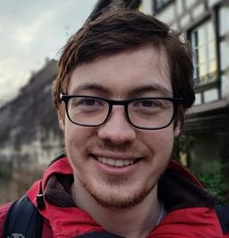
|
|
David Wellnitz (PhD student): From 2013 to 2018, David studied physics at the University
of Heidelberg. In 2018, he graduated (group of M. Weidemüller) on the application of network theory to atomic spectra.
For his PhD studies he moved to Strasbourg in Nov. 2018. He was working on the LabEx
NIE project: "Novel approaches to quantum many-body dynamics in molecular complexes", and
exploring collective dynamics in collective light matter coupled-systems. He is now a post-doc at JILA in Boulder, CO, US.
|
|
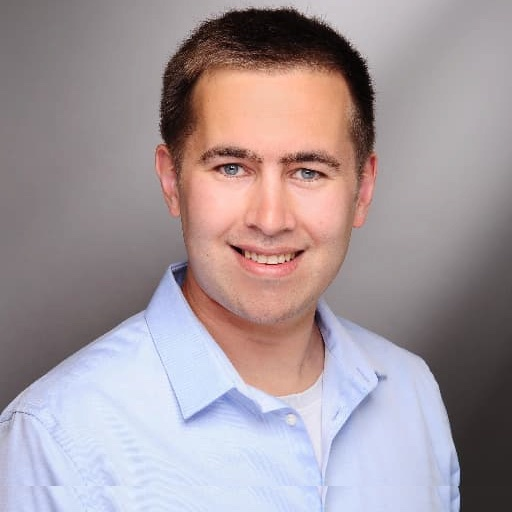
|
|
Stefan Schütz (post-doc): Stefan obtained his PhD degree in physics at
the Saarland University in Saarbrücken, Germany. In Strasbourg, from Oct. 2017 -
Dec. 2018 he was working on the IdEx Attractivité project "Simulation of transport in engineered
many-body quantum systems" (STEMQuS). He laid important foundations for exploring
cavity-coupled many-body dynamics by applying adiabatic elimination theories.
|
|
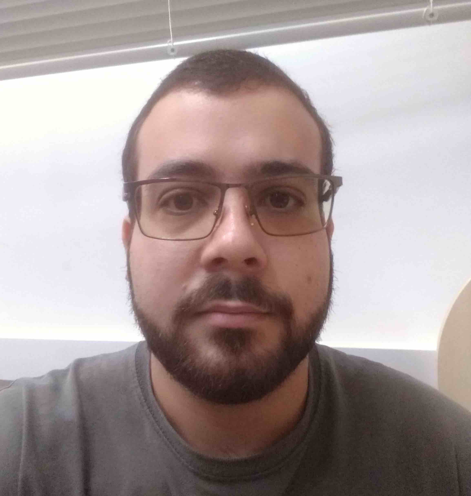
|
|
Tiago Santiago do Espirito Santo (visiting PhD): Tiago studied Physics at the
Universidade Federal de São Carlos (UFSCar) in Brazil and received his PhD degree in 2020
(under the supervision of R. Bachelard,
romain.df.ufscar.br).
He was visiting our team from Sep. 2017 – Mar. 2018 and worked on numerical modeling of
cold atom light-scattering experiments.
|
Master student projects:
- Maxence Pandini (2025) - Project: "Numerical analysis of dynamics in minimal models for cavity-coupled molecules".
- Romain Astorga-Petit (2024) - Project: "Anderson localization of light in coupled dipole models".
- Fabrizio Salas Ramírez (2023) - Project: "Entanglement Evolution in Noisy Quantum Circuits".
- Ruben Daraban (2022) - Project: "Numerical simulations of the quantum Fourier transform".
- Akram Kasri (2021) - Project: "Numerical simulation of hard-core bosons".
- Gaëtan Percebois (2019) - Project: "Numerical band structure calculations in optical lattices".
- We're always interested in hosting projects for motivated students, please contact me.
Funding
My research has been funded through the following research projects:
-
ERC Consolidator grant
Project MATHLOCCA: "Many-body Theory of Local Chemistry in Cavities"
-
Machine Learning for Quantum - MSCA doctoral network
PhD student project (2024-2027)
-
CNRS EMERGENCE@INC 2024: post-doc project (starting in 2024)
Project DINOPARC: "Disorder-induced non-classical states in polaritonic chemistry".
-
ITI Qmat 2023: 3-year PhD student project
Project CavQA: "Cavity-coupled chemistry: A Quantum many-body physics Approach".
-
Prix espoirs de l'Université de Strasbourg: Researcher Prize (2021)
(link).
-
ECOS-Sud & CNRS international emerging action (2021-2023): Binational traveling grant,
Project: "Quantum dynamics in cavity-coupled molecules"
Student exchanges with the group of F. Herrera (Santiago de Chile,
fherreralab.com).
-
QUSTEC 2019: 4-year PhD student project (2021-2024, G. Preisser),
Project: "Semi-classical modelling of open quantum technology platforms".
-
LabEx NIE 2018: 3-year PhD student project (2021-2021, D. Wellnitz),
Project: "Novel approaches to quantum many-body dynamics in molecular complexes".
-
IdEx Attractivité 2017: Research grant, post-doc project (S. Schütz, 2017-2018),
Project: "Simulation of transport in engineered many-body quantum systems" (STEMQuS).
|
|
|